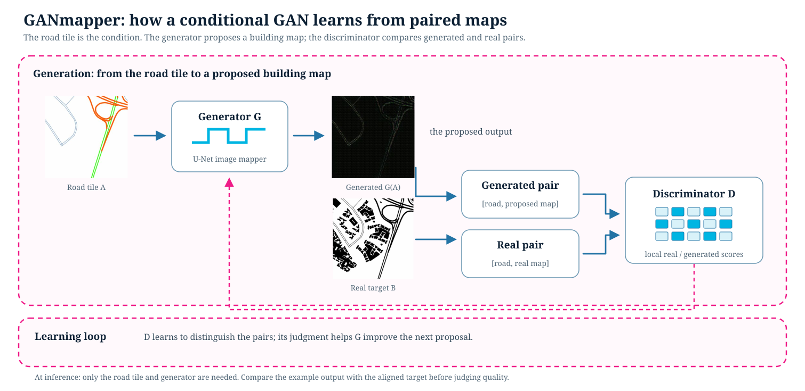

On this page
Module 1: Traditional Generative ML
Starter kit: starter_kits/1_traditional_generative_ml/GANmapper/biulding_profile_gen.ipynb
Related API: ccai9012.gan_utils
What problem does this module solve?
GANmapper is a paired image-to-image translation exercise. A road-network tile is the input image A; the aligned building-profile tile is the target image B. The objective is to learn a conditional mapping A → B, not to generate an unconstrained image from noise.
This pattern is useful when a spatial input supplies structure for a predicted map, such as a road layout to building footprints, a satellite image to an urban heatmap, or an urban form map to a design alternative. The generated image is a model output that needs held-out and domain-specific evaluation; visual plausibility alone is not validation.
Learning outcomes
After completing the notebook, students should be able to:
- verify that source and target images are aligned before training;
- explain how synchronized augmentation preserves correspondence;
- identify the U-Net generator, PatchGAN discriminator, and their tensor shapes;
- describe the adversarial-plus-L1 objective used by this implementation;
- run a bounded, offline inference and state what the visual comparison can and cannot establish.
The workflow

The exercise maps a road-network tile to a building-profile tile. The discriminator receives the source together with either the observed target or the generated target, so the task remains conditional on the road structure.
| Stage | Main input | Transformation | Main output |
|---|---|---|---|
| Scope | Tracked Exp4 folders |
Read sample_manifest.json, or explicitly select full |
Deterministic aligned pair records |
| Preparation | Source/target paths | Check the same city and tile path; resize to 256 × 256; normalize to [-1, 1] |
Paired tensor batch (A, B) |
| Model | A and B tensors |
U-Net predicts G(A); PatchGAN scores [A, B] or [A, G(A)] |
Generated target and patch scores |
| Learning | Generated and observed pairs | Least-squares adversarial loss plus pixel-wise L1 loss | Generator checkpoint and loss history |
| Inspection | Held-out source tile | One offline inference using the tracked checkpoint | Input, target, and generated comparison |
Data, access, and reproducibility
The notebook defaults to DATA_SOURCE = "sample". The checked-in manifest contains 24 deterministic pairs from the tracked data/Exp4 tiles and records the source, licence note, selection rule, schema, and expected runtime. It references existing images rather than duplicating them. Set DATA_SOURCE = "full" only when you want to discover all aligned pairs.
The sample path is offline and does not require an API key or download. It loads the tracked G_epoch_50.pth checkpoint and writes the single generated image under the example-local ignored output/ directory. Training is opt-in with RUN_TRAINING = True; sample training is deliberately bounded and hardware-dependent.
Model anatomy and loss
The code is a compact Pix2Pix-style conditional GAN, not CycleGAN:
UNetGeneratorencodes the source through three downsampling blocks and decodes it back to a256 × 256 × 3image with additive skip connections;PatchDiscriminatorreceives six channels—the three source channels concatenated with three target channels—and returns local patch scores;train_GANuses a least-squares adversarial objective andλ = 100for the pixel-wise L1 reconstruction term.
The generator objective is:
L_G = L_GAN(G, D) + λ ||B − G(A)||₁.
The L1 term encourages the prediction to remain close to the paired target. It does not guarantee correct building geometry, transfer to a new city, or robustness outside the tracked data.
Small glossary
- Paired translation: learning from source and target images that describe the same tile.
- Conditional GAN: a GAN whose discriminator and generator use the source condition
A. - U-Net: an encoder-decoder with skip connections that carry spatial information across the network.
- PatchGAN: a discriminator that scores local image patches instead of returning only one whole-image score.
- Held-out pair: an aligned pair excluded from the training split and used for inspection or evaluation.
Extensions and limitations
Reuse all_pairs to compare city subsets, expose the synchronized augmentation parameters to test assumptions, vary lambda_L1 while recording history, and add a held-out metric that measures the spatial structure the application requires. A reasonable baseline could copy or smooth the source representation before comparing it with the target.
The sample is a teaching and pipeline-verification subset, not a production training set. The notebook does not claim quantitative generative quality, and the tracked checkpoint is not retrained during the default run. Transparent target tiles are composited on white for display; both domains are converted to RGB tensors before inference.
Closest related components
ccai9012.gan_utils— pair discovery, deterministic manifests, loading, model definitions, training, checkpoint loading, and inference.m2_llm.md— a different modular mapping: text to structured output.m3_mm.md— multimodal reasoning and image-text tasks that can be used to inspect generated images.